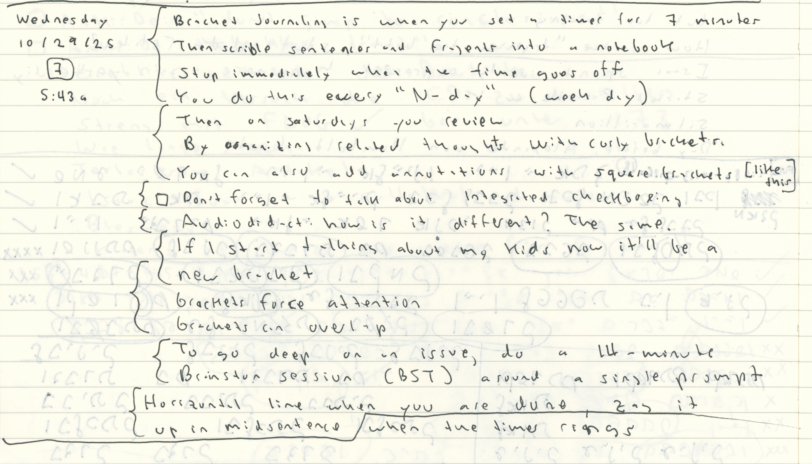

Everyday Systems: Podcast : Episode 99
Bracket Journaling
Do you keep a diary? It seems so quaint and old fashioned, like writing letters or sending postcards. But I love it. I love it so much I keep several diaries, in several different formats, some of which I've talked about already. The thing I've been doing the longest is talking to myself into a voice recorder, keeping sort of an audio diary ("audiodidact"). And then more recently, I podcasted about how I keep categorized microreflections on my daily personal punch cards and in my lifelog spreadsheet, little notes about how I'm doing in certain well-defined categories: diet, exercise, mood, and more. Today I'd like to talk about another kind of diary I've been keeping for years, something a lot closer to a traditional diary, in a physical notebook, but with some additional conventions that I find very helpful. I'll also discuss why I think it's helpful to keep all these different kinds of diaries, in different formats, despite how redundant and time consuming it may seem.
Bracket Journaling is what I call my hand-written diary system, a name obviously inspired by bullet journaling, but the system itself, I just called it "notebook," I came up with in blissful ignorance of bullet journaling – an ignorance which I have largely maintained until the present moment, despite my teenage daughter's repeated attempts to explain it to me. And the name actually makes a lot of sense once I explain the mechanics.
The key distinctive feature of bracket journaling is systematic review, which I think many approaches to reflection lack. The traditional approach to keeping a diary is you sporadically vomit something into your diary during moments of extreme emotional turmoil and then never look at the thing again except maybe years later and then you're mortified and throw it out. Review is unsystematic or completely absent.
In Bracket Journaling both the initial writing of the entries and the review are regular, systematic, habitual. You have to confront what you've written much sooner, inevitably, on a schedule. This is good in itself, the act of confrontation, you benefit from that act. But it's also helpful in advance, when you're writing the entry in the first place, because the knowledge that you're not lobbing an emotional hand grenade at some vague semi-stranger in the future but that it's you yourself just a few days from now, who will be on the receiving end of this, helps settle any histrionic tendencies you may be feeling and makes for less awful reading later in the week.
Here is how it works: Every N-day morning, that is to say, every normal day morning, so every weekday, non-holiday morning, as part of a longer series of N-daily morning routines, I grab my notebook from my backpack, and set a timer for seven minutes. Again I'm tapping into the N-day vs. S-day structure that I use for the No S diet, shovelglove and glass ceiling, among others. And again I'm using a timer to focus my attention and limit the time my habit takes so I can be sure to sustainably squeeze it in amongst all my other habits. So two reusable components of several everyday systems come into play here. The more things I hang onto these structures, the stronger they get, the more automatically all the habits I practice using them are carried along.
My bracket journal notebook is usually a red moleskin. When I fill it up every few months I have to get another one, there have been a bunch over the years, but usually it's been a red moleskin. You can use any kind of notebook, I'm not trying to push any particular brand, but I think it helps that it's physically distinctive to trigger a Pavlovian, associative response in you to put you into bracket journaling mode. The moleskins even have a distinctive tactile feel to them. So multi-sensory Pavlov.
The physicality of the notebook, the fact that it's not digital, is important. For one thing, most obviously, it removes you from digital distractions. It also feels more private. So you can write more freely. No, you can't search it quite as easily as you could electronically, and that's inconvenient, but neither can hackers or our algorithmic overlords. Also, as I've pointed out with personal punch cards, my index card-based task management system, because it's physical, you respect it more – in the digitally augmented multiverse we live in, the physical world is still premium reality. And you can take up this respect for the physical a notch by making it a nice physical notebook. I'm a frugal guy, but as far as luxuries go, nice notebooks are pretty affordable, so I permit myself this little indulgence.
I also use a distinctive, very fine point pen. It's the same pen I use for my personal punch cards: a Pilot G-2 0.38 millimeter gel tip. I like to be able to squeeze a lot of writing into a small space. Sometimes I have to, to fit everything on my punchcard. I buy these pens by the box and lose them constantly. They're nice pens but not so nice that I can't afford to lose hundreds of them a year (not quite, but almost). The bigger financial impact they have is when they leak in my pants or (even worse) when I forget to take them out of my pocket and throw them in the laundry. So I now check against that obsessively, my clothes get one pat down before I throw them in the laundry basket and another before I throw them in the washing machine. I also keep them in a leather pen holder aka pocket protector to guard against leakages, the ultimate in retro nerd chic. Because I used to also lose that constantly I stuffed an airtag into it. This may seem absurd given that the airtag costs more than the penholder and the 2 pens it holds combined, but considering the pairs of pants and loads of laundry this approach system has spared me, I think it's an excellent value.
These days we type on a keyboard or tap on a phone all the time. But we don't write on paper quite as much. The physical act of writing vs. typing taps into different brain patterns. I actually have no idea if that is true but it sounds plausible. It certainly feels true. It feels like you get a slightly different take on this than you would typing at the keyboard – a take you maybe don't get quite as often anymore, and is good to tap into. It's like consulting a slightly different version of yourself for a second opinion.
So without even going into specific conventions of bracket journaling, here are the benefits of using a physical notebook vs. digital: 1) Pavlovian association 2) freedom from digital distraction 3) sense of privacy 4) respect for the medium, 5) different perspective from the different physical mechanics of writing by hand.
The first thing I write once I hit the timer is a sort of header for the entry. I note the date, including the day of the week, because I have some sub rituals I associate with Mondays, Tuesdays, etc., the time, and the fact that I am timeboxing this activity for 7 minutes by drawing a little box around the number seven. If I'm in a super rush and can only write for 5 minutes or whatever I'll write that number instead. If for some reason I can set a timer, say because I don't want to disturb anyone, when I'm done I'll write the number of minutes I actually spent with a circle around it instead of a box. I write this header to the left of where I'm going to make my actual entry, leaving plenty of space below for the brackets I'm going to draw below in a second pass in a separate session later that week. So basically I'm creating two columns, a narrow one to the left for the header and to allow space for second pass bracketing, and a wide one to the right for the actual entries. The standard header is helpful not only for its information content, but because it breaks the ice, it gets you writing, and then it's a lot easier for your fingers to keep writing.
Then, once I've written the header, I write the journal entry itself: what happened yesterday, what I'm anxious about today, random crazy things that pop into my head, self-recriminations and pats on the back, tasks that occur to me that I want to write down before I forget them forever. Just usual diary stuff. If it's a task, I'll draw a checkbox to the left of it. I revisit those in a second review pass after bracketing. I call this form of task management "integrated checkboxing." It's secondary to what I do in my daily punch cards but also helpful.
I find that starting an entry with the word "yesterday" and just listing one thing that happened gets me scribbling nonstop. I don't write in paragraphs. Sometimes not even in complete sentences. Every distinct sentence or sentence fragment goes on its own line. It's basically a list of thoughts and impressions rather than a coherent literary production. I find this process of listing thoughts, without the friction of having to organize them, helps me get them out faster, or at all. I only have 7 minutes so I don't have time to sit around "nibbling my pen."
When the timer goes off I've usually got about half a page. I immediately draw a horizontal line as a signal that the timer has gone off and I am to stop. If I am in mid sentence I will finish the sentence and make the line zag up to before the word where the timer went off as a sign of my hard coreness about stopping and moving on to my next morning ritual activity. Sometimes I can't help myself and will add another line or two. Sometimes (rarely) I'll come back during the day and add something under the line, an idea or event I don't want to forget. But the line shows where the timeboxed writing stopped and encourages me to respect the limited amount of time I am able to regularly devote to this and not exceed it, because if I do I know I'm not really respecting it because I'm pushing it into unsustainability. And unsustainability means I will stop doing it. "If something can't go on forever, it won't." I respect my habit by limiting it and respecting those limits. It's not extra credit to do more – it's excess. Seven minutes may seem like nothing. But it's enough for this system to be very useful to me. And I don't want to risk it by going beyond.
Nothing too revolutionary in what I've described here yet: essentially, the Timebox Lord keeps a journal on N-days.
The finesse that elevates this to the next level, and where the system gets its name, is the systematic review session I do every Saturday morning. That's the bracketing. I don't set a timer for this part of the process since there is a built in limitation as to how much time it can take to review the output of sessions that were themselves time-limited and I want to ensure that I get through them all, so as not to fall behind. I read every entry since my last bracketing session, so the five entries from the previous week, assuming I've been good and my bracketing is in sync with my N-daily entries, which at this point, it almost always is.
The bracketing works like this: As I'm reading, I cluster related thoughts together by drawing curly brackets to group them on the left side. Sometimes I'll even make sub-clusters, curly brackets within curly brackets, or partially overlapping clusters, to mark transitions – sometimes it's funny to see how my mind jumps from one thing to another not necessarily because of a logical or even emotional connection, but because the sound of a word reminded me of something else. The curly bracket is the symbol editors used to use to indicate that chunks of text should be in the same paragraph back in the days when editors still edited on paper. So in a way, I'm circling back to that first step that I skipped when I was just trying to get my thoughts out as quickly and uninhibitedly as possible, I'm retroactively organizing the list of sentences and fragments into paragraphs.
The main point of the bracketing is as a device to force attention. I have to think about what I'm reading a bit more in order to organize it like this. The bracketing forces me not to skim over each line, to scan them as if they were mere emails. But it's also helpful should I ever come back one day, years later, when the context of whatever I've written is far more than a week old and the connections between my ideas maybe not so obvious. Paragraphs serve a purpose after all: not for getting the initial thought out, maybe, but for contextualizing and communicating it.
Sometimes I'll also add comments and clarifications in square brackets, little annotations. So a second kind of bracketing. Curly brackets for paragraphing, square brackets for annotations. The square brackets make it clear that these thoughts were from a second pass, not part of the original. Sometimes if my handwriting was really terrible I'll trace over a sloppy letter to straighten it out and make it clearer. It's easier to decipher this sort of thing after a mere week than it will be years later.
I'm often surprised at how thoroughly I'd forgotten what I'd written just days before. Sometimes I have to laugh at how naive a concern turned out to be. Sometimes I'm shocked at how I could have so quickly and thoroughly forgotten something I really need to dig into. The review, that one built-in, guaranteed review session every week, calls back into mind so many things I would have forgotten almost immediately. And maybe I'll forget them again. Most of them I probably will. Most of them I probably should. That's fine. But the review gives the more important observations a second chance to register more deeply. Maybe I'll now make a note now on my daily punch card to take action on something lest I forget it again. Or get it in my calendar. Or maybe it just gets my gears spinning again and I really think it through.
Forgetting serves a purpose, right? We wouldn't want to never forget anything. You've probably heard of those famous medical cases of people with close to perfect recall of everything and they were miserable and useless because there was no prioritization, there was nothing important and unimportant. But total amnesia isn't great either. The 2nd pass review is a good place to be on that spectrum for remembering and forgetting. If you forget something again even after that review, good riddance to that memory, you gave it a fair chance to take hold, it did not make the cut.
My bracket journal review process mirrors what I do with audiodidact, my original systematic reflection practice, when I listen to my voice recordings. It also mirrors what I do with my personal punch cards, transferring them to the lifelog spreadsheet. "Self-reflective Saturdays" are when I do all three of these weekly reviews. Clustering these three reflective review sessions like this on one day is helpful not just organizationally, so I remember to actually do them, but because they kind of inform each other, each offers a slightly different take on the same events or concerns, or fills in gaps, or sometimes the gaps themselves jump out at me, because I think, "man, how could I have neglected to make any note of that THREE TIMES? That's clearly something I REALLY don't want to think about… and probably should."
There is a passage in the book of Esther when king Ahasueros has the scribes read the chronicles to him and he is reminded that Mordechai has saved his life and should be rewarded. The surprises I experience during my review sessions are not usually quite that big but they happen frequently. And I can't imagine how much I'd be missing if I didn't have these practices in place, how many really important balls I'd be dropping, how many more, because even so I drop plenty. Not just practical things, but human things, people I need to check in on, follow up on something with. It's a little disturbing to be confronted with how lazy and sloppy my memory is, even about the most important things. And of course, it's not random, or merely lazy: many of the things I catch myself forgetting are difficult things, painful things, things I'd rather forget, that would be convenient to forget, but would be better off facing. Bracket journaling, and this larger redundant reflective review process with these three systems, noodges me to deal with such things.
That's the basic process of bracket journaling: Timebox Lord keeps a journal every N-day with systematic review. But I have a few other layers on top of this that I also find helpful: Advanced Bracket Journaling. I'll mention them very quickly because I do find them very helpful.
One of them I mentioned already: the integrated checkboxing. When I have a thought that could be construed as a task, I draw a little checkbox in front of it. That way I don't forget it immediately, and I don't have to break my flow, take time out of my precious 7 minutes to bust out a punchcard or calendar, and the checkbox, during review, jumps out at me. I have a second pass review that I do later in the week, separate from the Saturday bracketing review, that I call checkbox trawl, just to flip through pages with checkboxes and marking at the top of each with a capital or lowercase T whether I've cleared them all for each page. I revisit lowercase t pages and promote then to uppercase by drawing a line at the top when I can complete them or at have at least transferred them to one of my front-line task management systems. Yes, as with reflection, I've got multiple redundant systems for task management, and this does not disturb me. Consult my episode on Good Redundancy to grok that concept better.

Another advanced technique is using the bracket journal for brainstorming, or BST for short. I do one of these every Thursday (thoughtful Thursday), and sometimes throw in some extra. I'll take a new page for every brainstorming session. I get some idea of a topic, set a timer for 14 minutes, and then write about just that topic until the timer goes off. It lets me go deeper into a particular issue than the usual, shorter N-daily entry about everything. Usually, my prompt is some problem or challenge I am facing. Some examples: a particular person I need to sort something out with. Or a challenging event or trip coming up. Or a personal or work project I am struggling with. Or a habit I want to think about handling better or taking to the next level. At the top of the page I write my prompt, the letters BST to note that this is a brainstorming session instead of a regular entry, and the number 14 with a little box around it. I am surprised by how far I can get in 14 minutes, the progress I can make, wrestling with an issue, in such a short amount of time. Almost always I wind up with some clarity or even concrete next step actions that hadn't occurred to me before. I sometimes feel like I could keep going, but I never feel like, that that wasn't enough, I got nothing.
Unlike with the daily entries, with brainstorms, I do organize my thoughts a little up front, while I'm writing. Rather than one unrelated line after another, I make little islands, with a boxed header, around subtopics, usually two or three horizontally. If I can't think of a better subtopic to start with, I'll often start with an island I call "situation," and just describe the problem. Then potential solutions each become their own additional islands. The hardest part is thinking up the topic. Sometimes I come up with a list of BST topics in advance so I can jump right in. I always worry that I'm not choosing the most pressing thing to focus on but then once I start writing it always flows easily, and I never feel regret. In any case, I know I'll have another opportunity to BST next week, latest. When I review BST pages during my regular review sessions I put a dot into the box of every island to show I've reviewed it rather than using brackets because each Island pretty much corresponds to what a bracketed section would be already.
I used to do my brainstormings into my audio recorder as part of audiodidact, 14 minutes of focused rambling on a particular prompt. But paper works better for this. The extra dimension of being able to order my thoughts in space is very helpful. With the recorder it's too linear.

Another advanced technique is I like to practice my languages in my bracket journal. Two days a week, Dienstag and Donnestag, I write my regular journal entries auf Deutsch. On Friday I try to write en francais. If my Latin ever gets any better, Dies Lunae will be its day. And so on. It's a good way to throw in some language practice without taking up any additional time and it provides me with yet one more different version of myself to get a second opinion from about things: the German speaking me, the French writing me, etc. If I run into things I don't know how to say in the language I'm using, I'll make a checkbox to flag it for investigation and possible anki flash card making. I've been doing the same thing, for many years, with my audiodidact voice journal. I speak into the recorder using whatever the language of the day is. Same idea, two modalities. It's nice with both of these to notice, eventually, reviewing them, that I do seem to be making some progress. And even if my entries are slow and stumbling, I'm putting my brain in French or German mode. Even in the pauses, I'm thinking in those languages, and that has to be the key thing for learning, and for whatever cognitive/neurological side-benefits learning has.
Be that as it may, this is all a lot of work! Even the "basic" is a lot of work.
So let's take a step back.
Why do any of this? Why reflect at all? Why record it, in any medium, in any language?
Well, the way I look at it is you're going to reflect no matter what. You're going to ruminate. Your monkey mind is going to do that for you. Maybe for a few minutes some absorbing tasks or meditation or some other mindfulness technique can give you some respite. But mostly it's monkey mind spinning over the same old thoughts. So reflection, rumination, is a given. But if you don't record it, if you have no discipline around it, you're just going to keep spinning in circles. You're going to forget where you left off and start all over again, repeating the same old argument or what you should have said or whatever over and over again. A practice of reflection, of recording those reflections, and (this is critical) reviewing them again later, helps you make some actual progress instead of just going around in the same old circles. There's still spinning involved, but maybe now you're veering slowly in a certain direction, like a tornado. Maybe you can get somewhere. Maybe years later, you look back, or listen back, and you realize, "wow, I'm still spinning about the same old thing, time to move on" or "time to come to terms with it, accept it, and shut up." Or "wow, I really have moved on. I figured that out. I made actual progress. I'm not hopelessly stuck on everything and totally incapable of change."
"The unexamined life is not worth living." Socrates famously said. I think I've quoted it myself multiple times already in this podcast. But the overexamined life ain't so hot either. And in any case, do we really have a choice? Aren't we always ruminating over our lives, second guessing what we did or said or should have done or said? "Why make a virtue of what we can't help doing?" as Nietzsche asked.
Well, maybe it's how we reflect that is the key issue, the small scope for decision we have. The small scope for virtue.
There are other reasons to keep a diary, of course. But for me, that's the big one, I think. I can be tortured by rumination or I can get out ahead of it and try to steer my ruminations a little. I can't control them, but maybe I can do a little dance with them, nudge them in this direction, pull away a bit from that. Those are my options: be slapped around by monkey mind or do this little dance with it.
It's the same issue meditation engages with, from a different angle. I like to think of meditation and reflection as complementary approaches. Monkey mind, or whatever you want to call it, is a big enough issue, a big enough reality, that approaching from more than one angle is warranted. I'm not sure I have any original insights to impart about meditation, but I do do it regularly, and maybe I'll discuss my experiences with it in a future episode.
Between all these diary systems I've got quite a streak going. Audiodidact since 2002 (when I was using an old-school magnetic tape microcassette recorder, I switched to digital in 2005). So that's 23 years. Even my first, crude lifelog spreadsheet in 2016 had a microreflective notes column. So that's 9 years. And my first bracket journal I started in 2021. I'd made some stabs with physical notebooks before then but that's when the first actual bracket appeared. So over 4 years at this point.
There are no big gaps. With the exception of one intense but brief depressive episode that interrupted audiodidact for a few months in 2009, I have entries for almost every day (or at least N day) since I started practicing each of these systems. And with so many "samples" of myself over such a long period of time, I feel like I've got a pretty comprehensive picture. There's a little bit of self-censorship going on. But the familiarity and informality of these processes, and the sheer mass of what I've confided already means I sometimes let my guard down entirely. I can't even remember what compromising things I've said or scribbled before so I might as well just keep going.
One day, maybe, I'll dump all my notebooks into a big AI to make sense of them. I imagine some scanner robot of the future, some r2d2 garbage can digitizer I'll dump all my notebooks and index cards into to be processed. A sort of memory hole where the memories get preserved and analyzed instead of destroyed.
But for now, and maybe for ever, I'm happy keeping it offline. Maybe the r2d2s won't be so benign, and in any case there's something to be said for keeping at least a piece of me out of their reach. And who am I kidding? It's the exercise and not the artifact that's really important, to the extent that any of this is important, what the process of writing these entries gives me vs. the notebooks themselves. They could really go into a memory hole (as eventually, no doubt, they will) and still have most of their value – as long as I'd gotten that one weekly review in.
Well, that's all for today. Thanks for listening.
© 2002-2025 Everyday Systems LLC, All Rights Reserved.